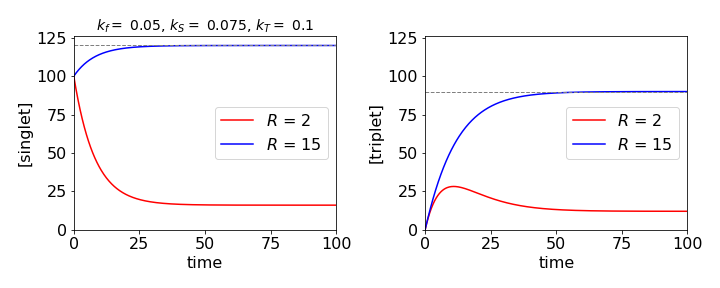

Solutions Q22 - 37
Contents
Solutions Q22 - 37#
# import all python add-ons etc that will be needed later on
%matplotlib inline
import numpy as np
import matplotlib.pyplot as plt
from sympy import *
init_printing() # allows printing of SymPy results in typeset maths format
plt.rcParams.update({'font.size': 14}) # set font size for plots
Q22 answer#
If \(S\) is the excited singlet state concentration and \(T\) that of the triplet, then the rate equations are
The first equation can be separated to give
with initial conditions at time zero, \(S(0) = S_0\) and where normally \(S_0\gt R\tau\). \(R\) has units of moles of photons/volume/time. The abbreviation \(\tau =1/(k_f+k_S)\) is now made, and \(\tau\) is called the excited state lifetime. Integrating gives
and after rearranging,
The singlet state population therefore increases or decreases with a lifetime \(\tau\) to reach a steady state value of \(R\tau\) at long times, its initial value being \(S_0\). This happens because in this example the molecules are continuously excited and so the population changes until steady state is reached. In the case that illumination begins at \(t = 0\), the initial singlet state population is zero. If the steady state has already been achieved thus \(S_0 \gt 0\) and then the illumination intensity is changed the the equation also describes this behaviour.
Substituting for \(S\), the second equation becomes
which can be integrated using the integrating factor method. The factor is \(\displaystyle e^{k_TT}\) and the solution,
and when \(t = 0, \,T(0) = 0\), then the following complicated equation is produced;
This equation shows that the triplet population is initially zero, and depending on the relative values of the rate constants it rises to a maximum then falls to the steady state value or simply rises to the steady state. The steady state or infinite time value of the triplet population is
which is proportional to the number of singlet states initially formed multiplied by the fraction of those forming the triplet state \(k_S /(k_f + k_S)\) and multiplied by the decay time of the triplet \(1/k_T\).

Figure 38a. The singlet and triplet populations under different illumination conditions showing approach to steady state as shown by dashed lines.
Q23 answer#
(a) The rate equation becomes \(\displaystyle \frac{dA}{dt} + k_sA = k_aI_0\delta(t - t_0)\)
which, using the integrating factor, has the solution
The delta function has the property that
because the delta function is zero everywhere except \(t = t_0\). The result is
The constant is found when \(t = t_0\) and \(A(0) = A_0\), then \(c = (A_0 - k_aI_0)e^{k_St_0}\) and the amount of A is
which reduces to the commonly quoted form when \(t_0 = 0\).
(b) The exponentially decaying pulse produces the equation \(\displaystyle \frac{dA}{dt}+k_SA=k_aI_0e^{-k_at}\).
The equation is solved as \(\displaystyle Ae^{k_St}=k_aI_0\int e^{k_St}e^{-k_at}dt+c\) to give
When \(k_a \to \infty\) the pulse is very short and the population of A decays as \( \displaystyle A = A_0e^{-k_St}\). At the other extreme, when the laser pulse is very long, \(k_a \to 0\) and \(e^{-k_at} \to 1\), then
and there is an increase in population as the pulse is switched on and which continues for a time of \(\approx 5/k_S\) or five lifetimes, which is approximately the time an exponential takes to reach about \(90\)% of its final value.
Figure 38b. Population with exciting pulses of different durations with constants , \([A_0]=0\), initial amount is zero and \(k_s=0.1\). Blue line \(k_a=2\), red line \(k_s=0.02\) which shows the slow increase with a long excitation pulse. At long times the fluorescence decay makes the population zero.
Exercise: A more commonly used pulse shape is a Gaussian, \(\displaystyle \exp(-(t - t_0)^2/b) \). The resulting equation can only be solved numerically in terms of an error function, and shows that the population rises to a maximum as the pulse is absorbed. The population would remain constant if the molecule did not react, but as it does, it goes through a maximum. Solve the rate equation and choose some values to illustrate this behaviour. Make sure that the Gaussian is displaced so that its value is essentially zero at zero time.
Q24 answer#
The first two terms are straightforward; when \(n = 0\) then \((2x-D)^0 f = f\),
and when \(n = 1\) then \((2x-D)^1 f =2xf - Df\) which produce 2\(x\) and zero respectively when \(f = 1\).
The next term is \((2x - D)^2 f = 4x^2f - 2xDf - fD(2x) - D(Df )\)
and the \(f\) is put in front of the third term \(-f D(2x)\) because here \(D\) only operates on the 2\(x\) not \(f\). To put \(f\) after the \(D(2x)\) would be ambiguous. In normal notation this becomes clear as the expansion is
The function has a value of \(1\) thus \(\displaystyle (2x-\frac{d}{dx})^2 = 4x^2-2\) which is \(H_2(x)\). The cube of the operator is expanded in the same way
where the final expression is obtained using \(f = 1\) and this is \(H_3(x)\). The remaining terms can be obtained by the same procedure.
Q25 answer#
The constants are found from \(x_0 = A\sin(B)\), and as
then \(v_0 = A\omega \cos(B)\). Solving these two equations gives \(B = \tan^{-1}(x_0\omega/v_0)\) and A is found using \(\cos^2(B)+\sin^2(B)=1\) and is
Q26 answer#
The simple harmonic equation of motion is \(\displaystyle x = \frac{v_0}{\omega} \sin(\omega t) + x_0\cos(\omega t)\), (see equation (20))
and if the weight is not to leave his hands when his arms are fully extended, then the acceleration upwards must be no greater than \(g\). The acceleration is
and the period of oscillation is \(T=2\pi/\omega\).
As maximum acceleration is at the end of the stroke, the sine and cosine must have values of \(\pm 1\) and the velocity must be zero, thus,\(x_0\omega^2=g\). Substituting for the period produces \(\displaystyle x_0=\frac{g}{4\pi^2}T^2\) and the maximum displacement must be \(0.248\) m if the period is 1 second.
The weight does not enter this calculation but is important nevertheless, not least to the body builder; for the greater the mass that is moved, the greater is the work that he has to do, as this is force multiplied by distance.
Q27 answer#
(a) The force equation for skidding is calculated by equating the linear force with the negative value of friction since this acts as a drag on the motion while the ball skids. The friction will aid the angular motion and is present as a couple because it can only act through the centre of mass or rotation axis. This is the hardest part of the question; the equations are
Notice that \(\alpha\) is a dimensionless constant. Integrating each equation with initial values \(v_0\) and \(\omega_0\) at \(t\) = 0 and using \(I = k^2m\) (units kg m\(^2\)) gives
(b) When \(v=r\omega \) the ball stops skidding at time
when the linear velocity is \(\displaystyle v=v_0-\frac{v_0-r\omega_0}{(1+r^2/k^2)}\).
Surprisingly the velocity at which skidding starts does not depend on the friction coefficient \(\alpha\), but instead, the time when this occurs. The larger \(\alpha\) is, the shorter the time at which skidding stops, but the ball always starts rolling at the same velocity. This occurs when the turning forces exceed the frictional ones, hence depends on the radius and mass of the ball, at a fixed \(\omega_0\), hence the linear velocity is independent of \(\alpha\).
(c) The initial and final energies are
and using \(v = r\omega\) the energy lost to friction is
The energy loss does not depend on the friction coefficient \(\alpha\) because the velocity is independent of this.
Q28 answer#
(a) If \(v\) is velocity, the equation of motion is \(\displaystyle mv\frac{dv}{dx} = -\frac{m\alpha}{x^2}\),
which is integrated to \(\displaystyle \frac{v^2}{2}=\frac{\alpha}{x}+c\)
As the particle is initially at rest at \(x = R\), then \(c = -\alpha/R\) and \(\displaystyle v^2=2\alpha\left( \frac{1}{x}-\frac{1}{R} \right)\).
(b) The time is found using equation (15), which in this case is \(\displaystyle t=\pm \sqrt{2}\int\frac{dx}{\sqrt{F(x)}}+c_1\) and where \(\displaystyle F(x)=-\alpha \int\frac{dx}{x^2}+c\) was calculated in (a) making
and so
Making the substitution \(\displaystyle x=R\cos^2(\theta)\) and using \(dx=-2R\cos(\theta)\sin(\theta)\) gives
At \(t = 0,\, x =R\) and so \(\theta=0\) making the constant \(c_2 =0\). At the origin \(x = 0\) therefore it follows that \(\theta = \pi/2\). The total time from \(x = R\) to the origin is found when \(\theta = \pi/2\) because \(\theta = 0\) at \(t = 0\) and is \(\displaystyle t=\pi\sqrt{\frac{r^3}{8\alpha}} \).
The time to complete a circular orbit is \(\displaystyle t_c=2\pi\sqrt{r^3/\alpha}\) which is, of course, a year, so the ratio of times is \(t/t_c=1/(2\sqrt{8})\approx 0.177\) which is about \(65\) days. This is the time it would take the earth to fall into the sun.
(b) Arriving at the earth’s surface from a great distance, means that \(R\) is very great compared to the radius of the earth, and, without any great error from part (a) \(\displaystyle v^2=\frac{2\alpha}{x}\) and substituting for \(\alpha\) gives the velocity arriving at the earth’s surface as\(v=\sqrt{2gr}\) when \(x = r\). This has the value of \(11.18\) km/s, which therefore is also the escape velocity.
Q29 answer#
(a) The force equation is \(\displaystyle m\frac{d^2y}{dt^2}=-\frac{k}{y}\)
and the proportionality constant \(k\) has units \(\mathrm{kg\, m^2\,s^{-2}}\). Multiplying by \(2dy/dt\) gives
The differential \(\displaystyle \left( \frac{dy}{dt} \right)^2 = 2\frac{dy}{dt}\frac{d^2y}{dt^2} \), therefore integrating gives
where \(c\) is the integration constant. At \(t = 0\) the velocity is zero and the particle is at \(y_0\). The constant \(c = 2k\ln(y_0)/m\) and hence the velocity is
The negative root is taken because the distance is decreasing.
(b) The time is calculated by integrating \(dt/dy\) from \(y_0\) to zero at the origin,
which does not look to be that simple, however, after some guessing and trial and error, we find that substituting \(\displaystyle y/y_0=e^{-x}\) and \(\displaystyle dy=-y_0e^{-x}dx \) and the limits \(x=0,\infty\) produces
This integral describes the gamma function, \(\Gamma(1/2)\), and has a value \(\approx 1.77\). The transit time is thus lengthened for a large mass and reduced for a large attractive force constant. Checking the dimensions gives \(\sqrt{m/k} = \mathrm{kg^{1/2}\, m^{-1}\, kg^{-1/2}\, s} = \mathrm{m^{-1}\,s}\) and therefore the integral has units of distance. This may also be inferred from the original integral in \(dy\) because the log is dimensionless.
Q30 answer#
Using \(k_2 \equiv k_dM\) clarifies the rate equations which are
The method is to form and solve a second-order equation. Substituting and rearranging gives
To eliminate \(E^*\) use the first equation
With the abbreviations \(b\) and \((c/2)^2\) for collections of rate the equation becomes \(\displaystyle \frac{d^2M^*}{dt^2}+b\frac{dM^*}{dt}+\frac{c}{2}M^* = 0\) which has a standard solution.
The characteristic equation is \(\displaystyle k^2+bk+\frac{c^2}{4}=0\) with roots \(\displaystyle k=\frac{-b\pm\sqrt{b^2-c^2}}{2}\). The form particular form chosen for the constants (\(b\) and \((c/2)^2\)), is only to make the resulting equations simpler and has no other purpose. The concentration of the monomer’s excited state is
where \(A\) and \(B\) are constants. The initial conditions are, \(M^* = M_0\) and hence \(dM^*/dt = -(k_f + k_2)M_0\) and this is the rate of change of \(M^*\) at zero time because \(E^*\) is zero. Evaluating the constants produces
with \(\beta=\sqrt{b^2-c^2}\).
The excimer population is found in a similar way with \(E(0)=0\) and \(dE^*/dt=k_2M_0\) because the initial amount of \(M^*\) is \(M_0\). The result is
\(\quad\)
Fig 39a. Sketch of monomer and excimer emissions.
The two populations show that the monomer decays as the sum of two exponential terms; the longer one is due to re-population of the monomer from the excimer, whereas the excimer decays as the difference of the same two exponentials, but taken in equal proportions. The excimer intensity, which is initially zero, rises and passes through a maximum. At long times, the decay rate constant of the two species is the same as the equilibrium is set up between the two types of excited states.
Fig. 39. Populations of excited \(M^*\) (blue) and excimer \(E^*\) on a log scale vs. time in ns. The non-single exponential decay is obvious.
Q31 answer#
As the solution only has electrolytes with similar and opposite charges, and therefore similar and opposite numbers, the change density is simplified to
The equation to solve is
Multiplying both sides by \(d\varphi/dx \) and formally integrating once gives
Completing the integration on the right, from \(x\) to infinity, which is from \(\varphi\) to \(\varphi = 0\), and rearranging gives
Separating variables and integrating again, using the abbreviations \(\displaystyle \alpha =\sqrt{8\pi Nk_BT\epsilon}\) and \(\displaystyle \beta = ze_0/2k_BT\) gives after rearranging
Using SymPy to do the left-hand integration gives
beta, phi,phi_0, phi_1 = symbols('beta, phi, phi_0, phi_1',positive = True)
f01= 1/(exp(beta*phi)- exp(-beta*phi))
ans = integrate(f01,(phi,phi_0,phi_1))
factor(ans)
Simplifying this result and combining with the other integral produces
When \(\beta \varphi\equiv ze_0\varphi/(2k_BT) \ll 1\) the exponential terms can be expanded to produce
and this can be further simplified to
because both \(\beta\varphi\) and \(\beta\varphi_0 \ll 1\). The constants are \(\displaystyle 2\alpha\beta\equiv \kappa = \sqrt{\frac{8\pi N z^2e_0^2}{\epsilon k_BT}}\). The value \(1/\kappa\) is referred to as the double layer thickness.
Q32 answer#
The terms in \(x^n\) for the \(d^2y/dx^2\) term are
and \(\displaystyle -2a_nx^n\) for the \(y\) term,
thus the recursion equation is \(\displaystyle (n + 1)(n + 2)a_{n+2} + n(n - 1)a_n-2a_n=0\) or
Evaluating by hand gives \(a_2 = a0,\, a_3 = a_1/3,\, a_5=a_1/15,\, a_7= a_1/35,\, a_9=a_1/63\) and the even index \(a\)’s, except for \(n = 2\) are all zero. The solution is thus
and the constants \(a_0,\;a_1\) are determined by the initial conditions. When \(a_1 = 0\) the solution is particularly simple. The odd powered series will probably be difficult to calculate accurately as the terms are alternatively positive and negative. The calculation in Sympy can be done as follows.
a0, a1 = symbols('a0, a1')
n0 = 12 # max number of terms
a = [''for i in range(n0)]
a[0]= a0
a[1]= a1
s=''
for n in range(n0-2):
a[n+2]= (2-n*(n-1))*a[n]/((n+1)*(n+2))
print('{:s} {:s}'.format('a'+ str(n+2)+'=', str(a[n+2]) ),end='; ')
pass
a2= a0; a3= a1/3; a4= 0; a5= -a1/15; a6= 0; a7= a1/35; a8= 0; a9= -a1/63; a10= 0; a11= a1/99;
Q33 answer#
(a) The Schroedinger equation inside the barrier is \(\displaystyle -\frac{\hbar^2}{2m}\frac{d^2\varphi}{dx^2}+V_0\varphi=E\varphi\)
where \(x\) ranges from \(0 \to a\).
(b) If the energy \(E\) of the particle is greater than the barrier height, then \(E \ge V_0\). Rearranging the equation gives
with \(\displaystyle k^2=\frac{2m}{\hbar^2}E\) and \(\displaystyle k_0^2=\frac{2m}{\hbar^2}V_0\) and where \(\displaystyle k^2-k_0^2 >0\).
This is a standard differential equation and has the general solution, with \(\displaystyle c^2 = k^2 - k_0^2\), as \(\varphi = A\cos(cx) + B \sin(cx)\) where \(A\) and \(B\) are determined by the four boundary conditions. Using the values given the two wavefunctions are \(\displaystyle \varphi_1 = \cos(cx)\) when \(\displaystyle \varphi(0) = 1,\; d\varphi/dx|_0 = 0\), and \(\displaystyle \varphi_2=\frac{\sin(cx)}{c}\) when \(\displaystyle \varphi(0)=0,\;d\varphi/dx|_0=1\)
(c) For either solution, the amplitude of the barrier transmittance \(T\) is found using \(L_{1,2}\) as defined in the question.
When the energy is above the barrier \(\displaystyle L_1=-ac\tan(ac),\; L_2=ac/\tan(ac)\). To calculate the transmittance, \(A^*_T A_T\) is needed where the * indicates the complex conjugate. This is a somewhat tedious calculation and most easily done using SymPy
# the calculation is separated into several steps as some intervention is needed
L1, L2, a, c, k, k0, AT = symbols('L1, L2, a, c, k, k0, AT ' , real = True )
L1 = -a*c*tan(a*c) # calculated from definition in text, then x replaced by a.
L2 = a*c/tan(a*c)
AT = -exp(-2*I*a*k)*((L1+I*a*k)/(L1-I*a*k) - (L2+I*a*k)/(L2-I*a*k))/2 # defined in text
# make complex conjugate
T = trigsimp(conjugate(AT)*AT) # transmission
ans= simplify(T.rewrite(sin))
ans
# simplify expression and convert to sine form
ans1 = collect(ans,cos(4*a*c))
ans3 = ans1.subs(cos(4*a*c),1-2*sin(2*a*c)**2)
ans3
# try more fiddling about produces formula that looks somewhat like the expected answer.
ans4 = collect( ans3,-2*sin(2*a*c)**2+1 )
ans5 = collect(factor(ans4),sin(2*a*c) )
ans5
Substituting for \(c^2\) and rearranging the expression can be rewritten as
and using \(\displaystyle k^2-k_0^2= 2m(E-V_0)/\hbar\) the transmission simplifies to
which is the required expression. Notice that the expression is dimensionless and both \(E\) and \(V_0\) are energies. Figure 40 (left) shows how the transmittance varies with energy relative to that of the potential \(V_0\) and (right) how the transmittance varies with the length of the potential measured in units of \(k_0\).
The left-hand figure shows resonances even though the particle’s energy is above the barrier. A classical particle (dashed line) would not be affected by the barrier, but in the quantum case, the particle can still ‘feel’ the potential and which leads to oscillation in the transmission past the barrier. The maxima occur when the sine is zero, which happens when its argument is a multiple of \(n\pi\) where \(n\) is a positive integer. The oscillations in transmission are due to interference between incoming particles and those reflected off the barrier.
When the energy is below the barrier, \(\displaystyle c^2= - \frac{2m}{\hbar^2}(E-V_0)\) and is negative this the Schroedinger equation becomes \(\displaystyle \frac{d^2\varphi}{dx^2}-c^2\varphi =0\) which has solutions related to the first case and are \(\varphi_1=\cos(icx)=\cosh(cx), \; \varphi_2=\sinh(cx)c \). The transmission may now simply be written down by changing \(\displaystyle (E-V_0) \to (V_0-E)\) and \( \sin \to \sinh\).
Fig. 40 Left: Transmission of particles past a barrier vs reduced energy with \(a\sqrt{2mV_0/\hbar }= 5\). \(V_0\) is the barrier height. When \(E/V_0 \lt 1\) the curve gives the amount of transmission due to tunnelling. When \(E/V_0 \gt 1\) the variation is due to interference between incoming particles and those reflected off the barrier. The dotted lines show the transmission profile of a classical particle. Right. The transmission vs reduced length of barrier as \(a/k_0\). The peaks occur when the argument to the sine are multiples of \(\pi\) and thus the sine is zero and \(T = 1\). The minima occur when the sin is \(\pm 1\), i.e \(T_{min}=\displaystyle \frac{4E(E-V_0)}{ 4E(E-V_0)+V_0^2 }\) and is shown as the horizontal dashed line.
The transmission becomes
which, since \(T\) is not zero, shows that tunnelling occurs into the barrier. When the argument to the sinh is large, the transmission becomes
hence the probability of transmission decays exponentially when the barrier is wide, the particle is heavy, or the available energy is small relative to the barrier’s height; this effect is called tunnelling. The ‘wave’ entering the barrier is called ‘evanescent’.
Tunnelling is important for electrons and protons and less so for heavier atoms or molecules. This is because for a large mass the exponential is reduced by so much that it approaches zero. Tunnelling also describes the umbrella or vibrational inversion motion by which the H atoms in ammonia move. The electrical current in a scanning tunnelling microscope, as its names suggest, is limited by tunnelling when the probe’s tip is very close to a surface. The superconducting quantum interference device, SQUID, is based on tunnelling of electrons through a thin layer of semiconductor sandwiched between two superconducting surfaces. The amount of tunnelling is very sensitive to any external magnetic field, with important applications in medicine.
Exercise: Calculate the effect of a negative energy barrier, \(V_0 \lt 0\) on the transmission.
Q34 answer#
Separating variables as \(c=c_xc_t\) produces \(\displaystyle \frac{1}{Dc_t}\frac{\partial c_t}{\partial t}=\frac{1}{c_x}\frac{\partial^2 c}{\partial x^2}-\frac{k_1}{D}\).
Each side of this equation must a constant which we will call \(-k^2\), then \(\displaystyle \frac{\partial c_t}{\partial t}=-Dk^2c_t\) which has the solution \(\displaystyle c_t=e^{-Dk^2t}\).
The other equation is \(\displaystyle \frac{\partial^2 c}{\partial x^2}-\left(\frac{k_1}{D}+k^2 \right)=0\), which has the solution
The boundary conditions are \(c = 0\) at \(x = 0\) and \(x = L\), then the only solution can be the sine term, because this is zero when \(c_x=0\) provided that \(\displaystyle \sqrt{k^2-\frac{k_1}{D}}=\frac{n\pi}{L}\) where \(n\) is an integer. The general solution for all \(n\) values is then,
This result shows that the concentration disappears at a rate independent of diffusion, as it should, because the rate constant is independent of position. When the reaction rate constant is very large, the concentration is greatly reduced before much diffusion occurs, but if it is very small then the concentration is much the same as if no reaction had occurred.
Q35 answer#
(a) The ratio to calculate is simplified to \(c_{av} /c_0\) because, in this example, \(c_f = 0\) and \(c_i = c_0\). Using the result of the calculation equation (56),
Although this is a complicated expression, \(x\) is only found in the sine making the integral straightforward and produces
On expanding the summation, each even \(n\) term is zero and the odd terms produce \(8/\pi^2\) and only the exponentials remain and give a highly non-single exponential decay,
(b) Whatever the value of the second and subsequent terms in the series are, they are clearly far smaller than the first and can reasonably be ignored at long times. Here the ratio, which is the average concentration diffused out of the slab, decays exponentially with a rate constant \(\displaystyle \pi^2D/L^2\),or lifetime \(\displaystyle L^2/\pi^2D\), from which \(D\) can be measured for example in a log linear plot by a least squares calculation. At short times, the second and subsequent terms must be included, but these will soon die away. Typically if \(D\) = 10−9 m2 s−1 and \(L\) = 0.01 m then the lifetime is \(\approx\) 104 s which is quite easily measured, and is well separated from the second term which has a lifetime 9 times smaller.
Fig 40a. The ratio \(r\) plotted with several terms (blue) and with just the first term (red) showing the highly non-single exponential decay due to increasing size of \(n^2\) in the exponential terms as the summation proceeds. Measurement of the slope at long times would be sufficient to determine the diffusion coefficient.
Q36 answer#
(a) The solution is given directly by equation (64); \(\displaystyle u =\sum_{n=1}^\infty b_n\sin\left( \frac{n\pi ct}{L}\right)\sin\left(\frac{n\pi x}{L} \right)\).
The \(b_n\) coefficients are calculated with the integral \(\displaystyle b_n=\frac{2}{\pi c n}\int_0^L (xL-x^2)\sin\left(\frac{n\pi x}{L}\right)\).
The first term is
and the second integral is calculated with Sympy as
x, L = symbols('x, L')
n = symbols('n', integer=True)
ans = integrate(x**2*sin(n*pi*x/L),(x,0,L),conds='none')
simplify(ans)
Combining these equations,gives the coefficients \(\displaystyle b_n=2(1-(-1)^n)\left( \frac{L}{n\pi} \right)^3\). The solution to the displacement is therefore the series
(b) The displacement can be very well approximated by the first term, the second being nine times smaller and the third even smaller.
Q37 answer#
It is easier to convert to the exponential form before attempting the differentiations. The calculation has many terms rather than being intrinsically difficult. SymPy will perform the differentiation very easily if the function is defined first.
x, a, t, c = symbols('x, a, t, c')
#f00 = -c/2*sech(sqrt(c)/2*(x-c*t))**2 # solution to test
f00 = 3*c*sech(sqrt(c)/2*(x-c*t))**2
#f01 = f00.rewrite(exp)
simplify(f01)

ans= diff(f01,t) +f01*diff(f01,x) + diff(f01,x,x,x) # differentiate, should be zero for solution.
simplify(ans)